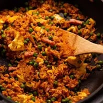

Red Vietnamese Fried Rice
Fried rice always makes for a great quick meal if you can incorporate enough “stuff” into it to fill it out from a nutrition perspective so you can justify calling it “dinner” rather than just a side dish. Today we’re turning to frozen peas, pre-chopped ham and egg for literal no-effort, no-prep add-ins to make this tasty dish called Red Vietnamese Fried Rice
- Prep: 8 mins
- Cook: 7 mins
- Dinner
- Vietnamese
Ingredients
- 30g / 2 tbsp unsalted butter
- 3 garlic cloves
- 75 g diced ham
- 140 g frozen peas
- 260 g day-old cooked jasmine rice
- 2 tbsp tomato paste
- 2 tsp fish sauce
- 2 tsp soy sauce
- 1/4 tsp white sugar
- 2 eggs
Instructions
- Melt most of the butter in a large non-stick skillet over high heat (save a dab for scrambling eggs).
- Add garlic, cook for 10 seconds.
- Add ham, stir for 30 seconds.
- Add peas, stir for 30 seconds.
- Rice and tomato paste – Add rice and tomato paste, cook for 2 minutes.
- Sauces – Add fish sauce, soy and sugar, cook 1 minute to get a bit of nice caramelisation on the tomatoey rice.
- Scramble eggs – Push rice to one side of the pan. In the cleared space, melt reserved butter then pour in the egg and scramble until just set.
- Serve – Toss cooked egg through the rice. Serve!
Nutrition Information:
- Calories: 544cal(27%)
- Carbohydrates: 72g (24%)
- Protein: 22g (44%)
- Fat: 18g (28%)
- Saturated Fat: 9g (56%)
- Polyunsaturated Fat: 2g
- Monounsaturated Fat: 5g
- Iron: 3mg (17%)
- Trans Fat: 1g
- Cholesterol: 211mg (70%)
- Sodium: 1375mg (60%)
- Potassium: 521mg (15%)
- Fiber: 6g (25%)
- Sugar: 8g (9%)
- Vitamin A: 1412IU (28%)
- Vitamin C: 34mg (41%)
- Calcium: 84mg (8%)